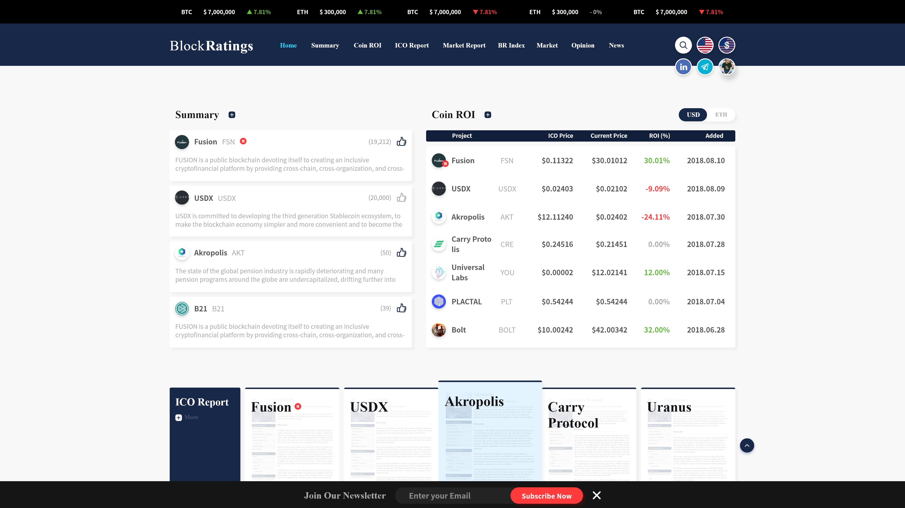
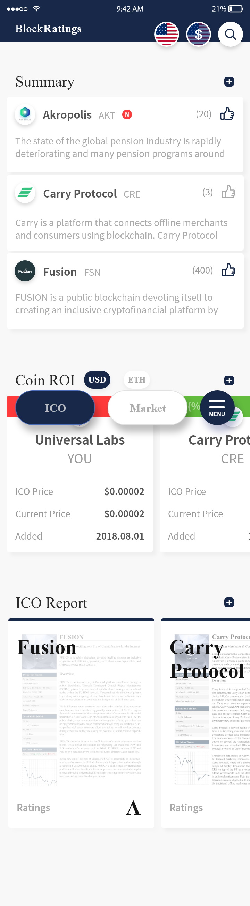

블록레이팅스
블록레이팅스
PC/Mobile Site, HTML, CSS, JavaScript
 
작업1. 메인의 기능과 효과
작업2. SlideUp / SlideDown
작업3. INPUT 빈값시 경고
작업4. FadeOut을 이용 하여 태그지우기
1.메인의 기능과 효과
-검색 버튼을 누르면 display:none 검색 바가 display:block이 되며 position이 가진 값으로 이동이 펼쳐지는 모션을 만들 수 있었으며, INPUT 기본 속성 clear 대신 검색창을 닫는 close 버튼 대체하기 위해 clear 속성은 input[type=search]::search-cancel-button 구문을 사용 하여 clear 대신 close 버튼을 사용 할 수 있었습니다.
-subscribe 버튼은 input type='checkbox',label , 가상클래스를 사용하여 checkbox가 checked일때 빨강색이 꽉 채워지며 left 값을 줘서 동적 인 checkbox를 만들수있었습니다.
-좋아요 아이콘 클릭 시 누른 느낌을 주기 위해 keyFrame과 animation을 사용 하여 아이콘이 작아졌다 커지는 효과를 만들었습니다.
-슬라이드 아이템에 마우스 올릴 시 아이템 선택 아이템 강조를 위해 transform scale(1.2) 사용 하였습니다. 슬라이드는 if else 구문과 증가,감소를 사용 하여 자체 제작을 했습니다.
2.SlideUp / SlideDown
menu 터치 시 slideUp 이벤트가 발생 되고 X 터치 시 slideDown 이벤트가 발생 됩니다. 간단 jQuery 이지만 모션이 자연스럽습니다.
3.INPUT 빈값시 경고
Enter Trade에 Date,Price,Share 한가지라도 입력 누락 후 SUBMIT을 누르면 Enter Trade Box에 빨간 border가 생기도록 경고를 주었습니다. 또한 작성 완료 후 SUBMIT 클릭 시 JS로 입력 정보에 대한 자세한 정보가 보이도록 css가 변하게 만들었습니다.
4.FadeOut을 이용 하여 태그지우기
delete 버튼 터치 시 this에 delete class를 가지고 있는 조건이면, this의 부모를 fadeOut 하여 tag를 지우는 효과를 줬습니다.